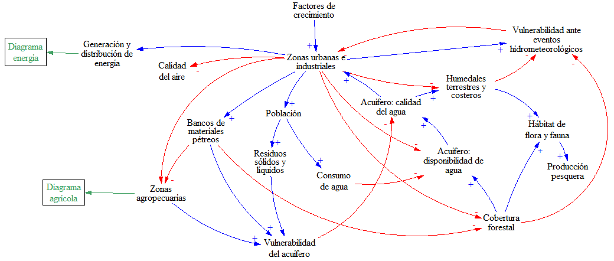
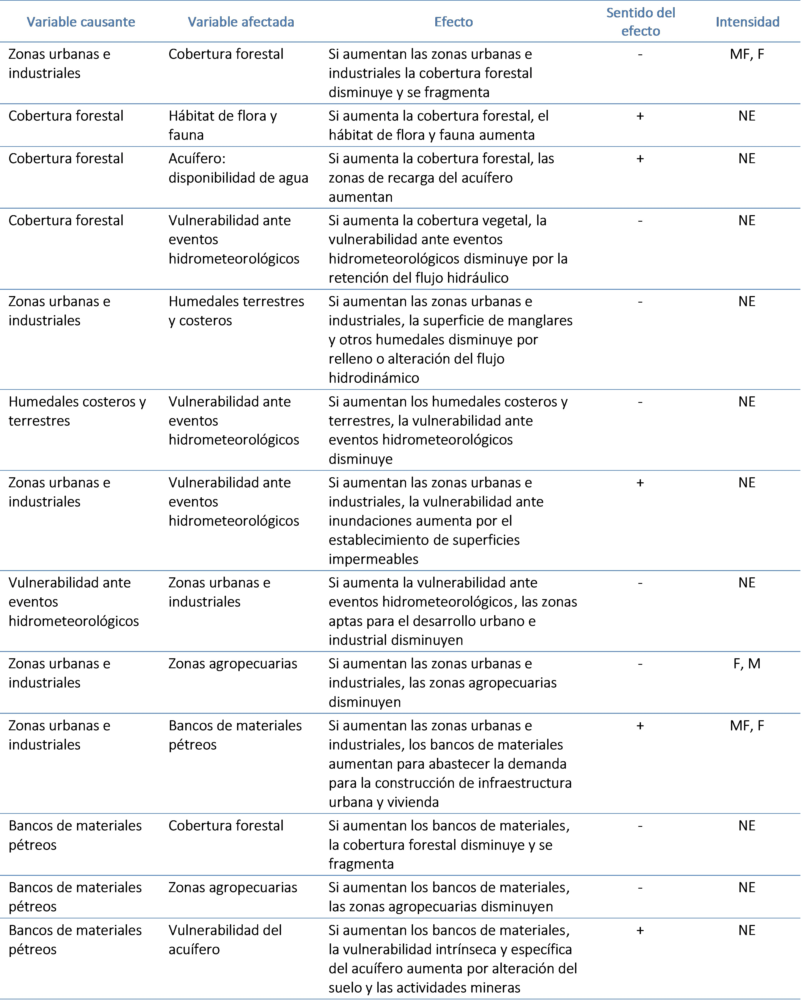
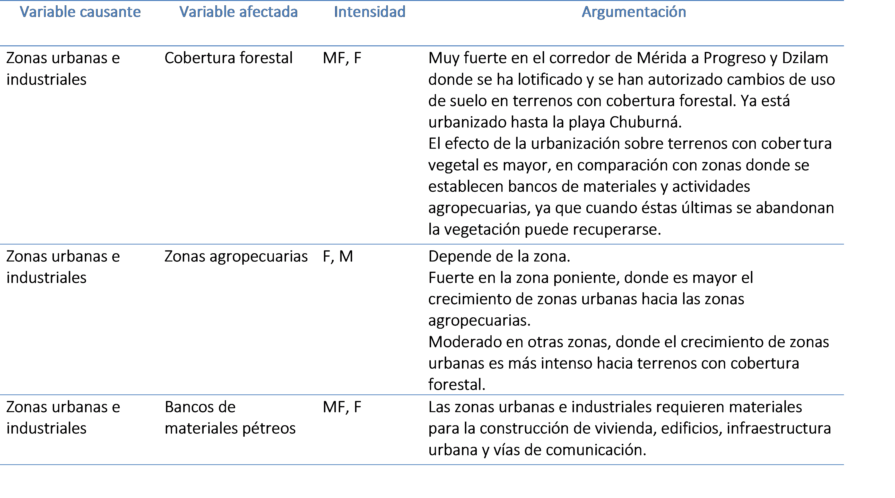

Urbano e industrial¶
Diagrama que representa los efectos del crecimiento urbano e industrial¶

Variables del diagrama que representa los efectos del crecimiento urbano e industrial¶
| Variable | Definición | Unidades |
|---|---|---|
| Acuífero: calidad del agua | Índice | Adimensional |
| Acuífero: disponibilidad de agua | Disponibilidad Media Anual de Agua Subterránea | Hectómetros cúbicos |
| Bancos de materiales pétreos | Superficie de bancos de materiales | Hectáreas |
| Calidad del aire | Índice | Adimensional |
| Cobertura forestal | Superficie con cobertura forestal | Hectáreas |
| Consumo de agua | Consumo de agua para uso de servicios, urbano público, industrial y doméstico; Consumo promedio de agua por habitante | Metros cúbicos; Litros/habitante |
| Generación y distribución de energía | Superficie de instalaciones de energía eólica, solar y termoeléctricas | Hectáreas |
| Hábitat de flora y fauna | Superficie total del hábitat interior de parches de vegetación natural | Hectáreas |
| Humedales terrestres y costeros | Superficie de humedales costeros, cenotes, dolinas, aguadas, etc. | Hectáreas |
| Población | Habitantes en zonas urbanas | Número de habitantes |
| Producción pesquera | Producción pesquera en el estado | Toneladas |
| Residuos sólidos y líquidos | Residuos sólidos y aguas residuales | Toneladas y metros cúbicos |
| Vulnerabilidad ante eventos hidrometeorológicos | Zonas vulnerables a inundación | Hectáreas |
| Vulnerabilidad del acuífero | Superficie de acuífero con vulnerabilidad alta a la contaminación | Hectáreas |
| Zonas agropecuarias | Superficie con uso agropecuario | Hectáreas |
| Zonas urbanas e industriales | Superficie de zonas urbanas e industriales | Hectáreas |
Interacciones del diagrama que representa los efectos del crecimiento urbano e industrial¶

Justificación de la evaluación de intensidad de las interacciones¶
